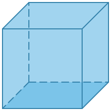
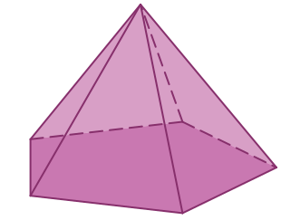
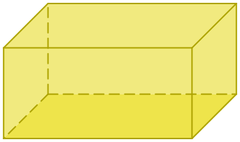
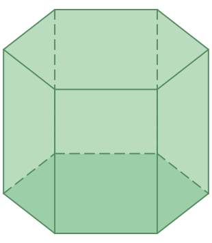
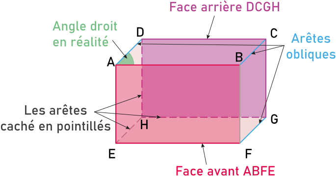
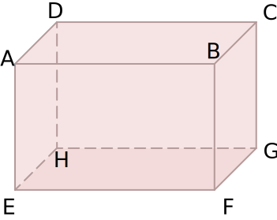
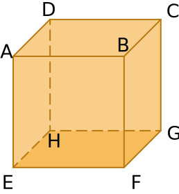

Activité Introduction
Un polyèdres est un solide dont toutes les faces sont des polygones. En voici quatre :
| Solide |
Cube |
Pyramide |
Parallélépipède rectangle |
Prisme droit |
| Représentation en perspective cavalière |
 |
 |
 |
 |
| Patron |
|
|
|
|
| Nombres de faces |
... |
... |
... |
... |
| Nombres de sommets |
... |
... |
... |
... |
| Nombres d'arêtes |
... |
... |
... |
... |
-
Completer les trois dernières lignes du tableau.
-
On se concentre sur le cube et le parallélépipède rectangle.
-
Qu'ont-ils en commun ?
-
Quelle est la forme des faces d'un parallélépipède rectangle ?
-
Construire le patron d'un cube de côté 4cm.
Cube et parallélépipède rectangle :
Perspective cavalière :
La
perspective cavalière est une représentation plane d'un solide avec :
- La face avant en vraie grandeur ;
- Conservation des parallèlisme et des alignements ;
- La profondeur représenté par des arêtes obliques et plus courte que la réalité ;
- Les arêtes cachés en pointillés.
Exemple :
La figure ci-dessous représente le parallélépipède rectangle ABCDEFGH en perspective cavalière.

Parallélépipède rectangle :
Définition :
Un parallélépipède rectangle (aussi appelé pavé droit) est un solide composé de six faces rectangulaires.
Exemple :
ABCDEFGH est un pavé droit représenté en perspective cavalière.

Remarques :
- Les points sont appelés sommets. Par exemple le sommet D.
- Les segments reliant deux sommets sur le bord du solide sont appelés arêtes. Par exemple l'arêtes [BC].
- Les polygones (ici rectangle) formé par les arêtes sont appelés faces. Par exemple la face ABFE.
- Les solides composés de faces polygonales sont appelés polyèdres
Un cube est un parallélépipède rectangle particulier dont toutes les faces sont des carrés.
Exemple :

Remarque :
- Un cube a toutes ses arêtes de même longueur.
Patron :
Un patron est un dessin du plan permettant de construire un solide par découpage et pliage.
Exemple :
Le patron d'un cube est composé de six carré collé les uns aux autres.
Remarque :
- Il est possible de créer plusieurs patron différents pour un même solide.
Volume :
Le volume est une grandeur représentant la contenance d'un solide. Il existe deux unités usuelles utilisé, le mètre cube noté m³ et le litre noté L.
Remarques :
- 1 m³ c'est le volume d'un cube dont tous les côtés font 1 m.
- 1 L correspond à 1 dm³
- En m³, pour passer d'une sous-unité à l'autre, on multiplie ou divise par 1 000.
Tableau de conversion d'un volume
Kilomètre cube
km³
Hectomètre cube
hm³
Decamètre cube
dam³
Mètre cube
m³
Décimètre cube
dm³
Centimètre cube
cm³
Millimètre cube
mm³
-
-
-
-
-
-
-
-
-
-
-
Kilolitre
kL
Hectolitre
hL
Decalitre
daL
Litre
L
Décilitre
dL
Centilitre
cL
Millilitre
mL
-
-
-
4
2
6
0
0
0
0
0
0
0
0
0
0
0
0
0
0
0
5
Exemples :
- 426 hm³ = 426 000 000 000 dm³
- 5 mm³ = 0,00 000 5 L
Propriété :
Le volume $V$ d'un pavé droit, de dimension L, 𝓁 et h, est :
$V=L\times 𝓁\times h$
Exemples :
Un pavé droit de 5 cm par 7 cm par 6 cm a pour volume $5\times7\times6 = 210 cm^3$
Un cube de 4 cm de côté a pour volume $4\times4\times4 = 64 cm^3$